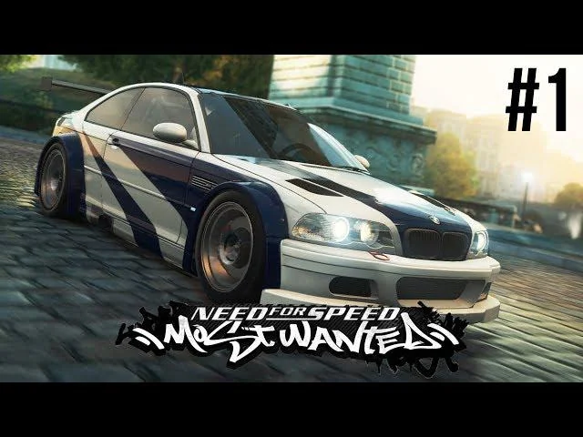

Des courses
Des épreuves variées pour gagner de l'argent et améliorer sa voiture.
LE JEU DE COURSE CULTE
2005 · Courses illégales · Poursuites policières
Découvrir le jeu
Need for Speed: Most Wanted est un jeu vidéo de course sorti en 2005 et développé notamment par EA Black Box. Le joueur participe à des courses dans la ville fictive de Rockport et doit éviter la police pour progresser.
Des épreuves variées pour gagner de l'argent et améliorer sa voiture.
Les poursuites deviennent de plus en plus difficiles au fil de la progression.
Plusieurs voitures sont disponibles et certaines pièces peuvent être améliorées.
Le but principal de la carrière est de remonter la liste noire, composée de 15 pilotes rivaux.
Pour plus d'informations : page de référence sur le jeu.